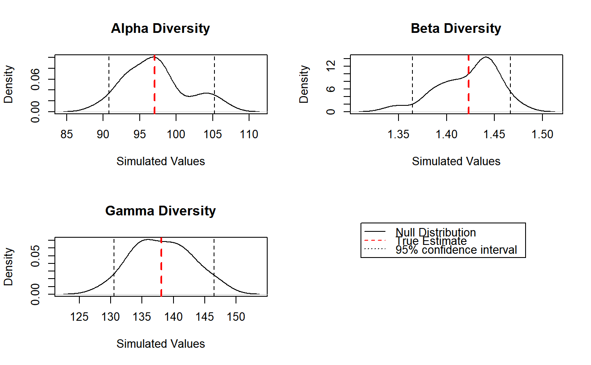

DivEst.RdEstimates diversity of a metacommunity.
DivEst(q = 0, MC, Biased = TRUE, Correction = "Best", Tree = NULL, Normalize = TRUE, Z = NULL, Simulations = 100, ShowProgressBar = TRUE, CheckArguments = TRUE) is.DivEst(x) # S3 method for DivEst plot(x, …, main = NULL, Which = "All") # S3 method for DivEst autoplot(object, …, main = NULL, Which = "All", labels = NULL, font.label = list(size=11, face="plain")) # S3 method for DivEst summary(object, …)
| q | A number: the order of diversity. |
|---|---|
| MC | A |
| Biased | Logical; if |
| Correction | A string containing one of the possible corrections. The correction must be accepted by |
| Tree | An object of class |
| Normalize | If |
| Z | A relatedness matrix, i.e. a square matrix whose terms are all positive, strictly positive on the diagonal. Generally, the matrix is a similarity matrix, i.e. the diagonal terms equal 1 and other terms are between 0 and 1. |
| Simulations | The number of simulations to build confidence intervals. |
| ShowProgressBar | If |
| CheckArguments | Logical; if |
| x | An object to be tested or plotted. |
| main | The title of the plot. |
| Which | May be |
| labels | Vector of labels to be added to multiple plots. |
| font.label | A list of arguments to customize labels. See |
| object | A |
| … | Additional arguments to be passed to the generic methods. |
Divest estimates the diversity of the metacommunity and partitions it into alpha and beta components.
If Tree is provided, the phylogenetic diversity is calculated else if Z is not NULL, then similarity-based entropy is calculated.
Bootstrap confidence intervals are calculated by drawing simulated communities from a multinomial distribution following the observed frequencies (Marcon et al, 2012; 2014).
A Divest object which is a DivPart object with an additional item in its list:
A matrix containing the simulated values of alpha, beta and gamma diversity.
Marcon, E., Herault, B., Baraloto, C. and Lang, G. (2012). The Decomposition of Shannon's Entropy and a Confidence Interval for Beta Diversity. Oikos 121(4): 516-522.
Marcon, E., Scotti, I., Herault, B., Rossi, V. and Lang, G. (2014). Generalization of the partitioning of Shannon diversity. PLOS One 9(3): e90289.
Marcon, E., Herault, B. (2015). Decomposing Phylodiversity. Methods in Ecology and Evolution 6(3): 333-339.
# Load Paracou data (number of trees per species in two 1-ha plot of a tropical forest) data(Paracou618) # Estimate Shannon diversity. Estimation <- DivEst(q = 1, Paracou618.MC, Biased = FALSE, Correction = "UnveilJ", Simulations = 20)#>plot(Estimation)summary(Estimation)#> Diversity partitioning of order 1 of MetaCommunity Paracou618.MC #> with correction: UnveilJ #> Alpha diversity of communities: #> P006 P018 #> 83.7268 118.2713 #> Total alpha diversity of the communities: #> [1] 97.06467 #> Beta diversity of the communities: #> UnveilJ #> 1.422843 #> Gamma diversity of the metacommunity: #> UnveilJ #> 138.1078 #> Quantiles of simulations (alpha, beta and gamma diversity): #> 0% 1% 2.5% 5% 10% 25% 50% 75% #> 89.64103 90.10350 90.79720 91.95337 92.86043 93.85074 96.91485 98.49928 #> 90% 95% 97.5% 99% 100% #> 104.11466 104.28565 105.25133 105.83074 106.21701 #> 0% 1% 2.5% 5% 10% 25% 50% 75% #> 1.347289 1.354156 1.364457 1.381624 1.384839 1.407170 1.433999 1.442474 #> 90% 95% 97.5% 99% 100% #> 1.450413 1.459604 1.466567 1.470745 1.473531 #> 0% 1% 2.5% 5% 10% 25% 50% 75% #> 129.3010 129.7963 130.5392 131.7774 133.6159 134.6326 138.3291 141.3829 #> 90% 95% 97.5% 99% 100% #> 143.4091 146.1764 146.4703 146.6466 146.7641